生成AIを、安全に使う。安全に守る。
社内向けのAIツールを安全に公開する設計と、自社のAIサービスを外部の脅威から守る設計。Cloudflare AccessによるVPNなしのゼロトラスト構成、LLMアプリのプロンプトインジェクション対策、AIクローラーからサイトを守る制御まで——2026年時点の公式情報にもとづいて実務の型を記録するメディアです。
記事一覧
すべて：12件
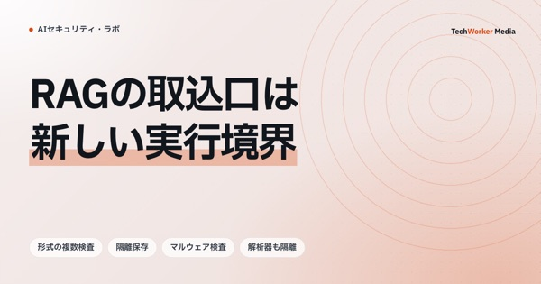
攻撃対策と検証
2026.09.30
RAGのファイル取込を隔離する｜マルウェア検査前に解析器へ渡さない設計
受け取ったファイルは、検査が終わるまで解析器やOCRへ渡しません。隔離、形式確認、マルウェア検査、制限付き解析、索引登録を状態で分けます。
情シス・AI導入担当→
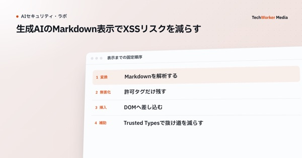
攻撃対策と検証
2026.09.28
生成AIのMarkdown表示でXSSリスクを減らす｜無害化・URL・Trusted Typesの実装境界
生成AIのMarkdownは、信頼できない入力として表示します。生のHTML、URL、画像、コードブロックを同じ処理へ流さず、解析と無害化の境界を固定します。
情シス・AI導入担当→
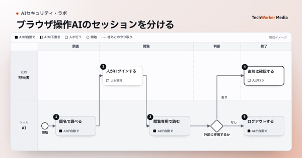
実行環境と通信の制限
2026.09.27
ブラウザ操作AIエージェントのセッション分離｜Cookie・ログイン・画面記録を閉じる【2026】
普段使いのブラウザ専用環境をAIへ渡すと、開いているセッションの権限まで渡ります。用途別専用環境と使い捨てセッションで、Cookie・保存先・画面記録を切り分けます。
情シス・AI導入担当→
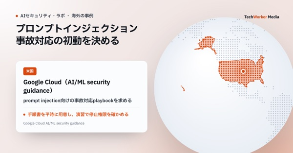
承認・監査・事故対応
2026.09.19
プロンプトインジェクション事故対応｜AIエージェントを止めて安全に復旧する
事故の初動では、モデルの返答を直す前に、ツール、認証情報、セッションを止めます。証拠を残し、影響範囲を確定してから段階的に戻します。
情シス・AI導入担当→
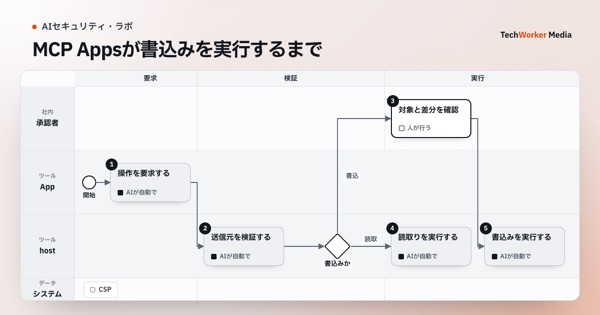
実行環境と通信の制限
2026.09.17
MCP Appsのセキュリティ設計｜iframe・CSP・postMessage・書込み操作をどう守るか【2026】
MCP Appsは、MCPホスト、隔離されたiframe、MCPサーバーの3者を分けて守ります。iframeだけに頼らず、CSP、postMessageの送信元、ツール権限を重ねます。
情シス・AI導入担当→
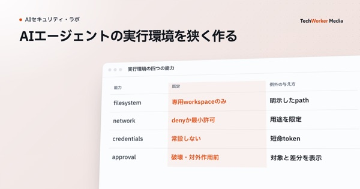
実行環境と通信の制限
2026.09.16
AIエージェントのサンドボックス設計｜作業領域・通信・認証情報を分離する
サンドボックスは、書ける場所、接続できる宛先、使える認証情報を別々に閉じます。承認は、その境界を越えるときだけ求めます。
情シス・AI導入担当→
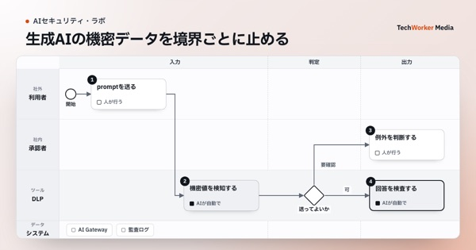
機密データの保護
2026.09.11
生成AIのDLP設計｜入力・出力・検索・記録で機密データを止める【2026】
生成AIのDLPは、入力だけを止めても足りません。入力文、モデル出力、RAG検索、観測記録の4か所で、遮断・伏せ字・通知を使い分けます。
情シス・AI導入担当→
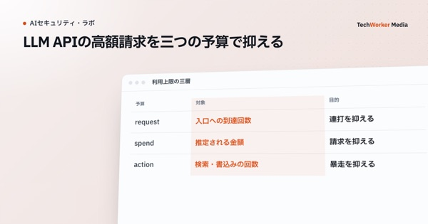
導入審査・調達・コスト
2026.09.08
LLM APIの高額請求を防ぐ｜回数上限・費用上限・ツール予算を分ける【2026】
高額請求は、回数、金額、外部ツールの3つを別々に止めます。1つの上限だけでは、長い要求や連続ツール実行を抑えられません。
情シス・AI導入担当→
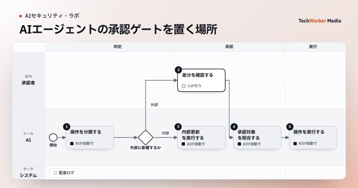
承認・監査・事故対応
2026.09.01
AIエージェントの承認ゲート設計｜どの操作を人が止めるべきか【2026】
承認を挟むのは、失敗時に外部へ影響が出る操作です。閲覧、下書き、送信、削除を同じ扱いにせず、実行直前の差分を人に見せます。
情シス・AI導入担当→

権限とアクセス管理
2026.08.09
社内ツール・管理画面をVPNなしで守る｜Cloudflare Accessによるゼロトラスト構成
内製AIツールや検証環境へのアクセスを、アプリごとに管理する方法を示します。Cloudflare Accessの導入手順と、直結経路・退職時の権限失効で見落としやすい点を確認します。
情シス・AI導入担当
→
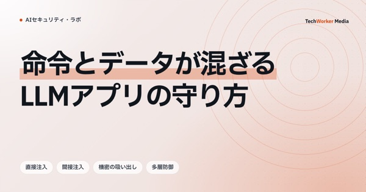
攻撃対策と検証
2026.08.09
LLMアプリのプロンプトインジェクション対策｜Cloudflareのガードレール機能で何を防げるか
CloudflareのAI向け保護機能は、入力の検知と緩和を助けます。公式資料を基に、防げる範囲とアプリ側に残る対策を確認します。
情シス・AI導入担当
→
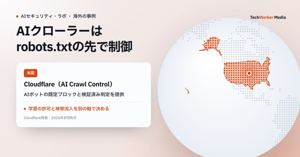
実行環境と通信の制限
2026.08.09
AIクローラーからサイトを守る｜robots.txtの限界とCloudflareでの制御
AIの学習を止め、検索からの流入を残すには、クローラーごとの役割を見分けます。robots.txtの限界と、Cloudflareで観測・制御できる範囲を確認します。
情シス・AI導入担当
→
このメディアには、選んだ読者向けの記事がまだありません。
メディア全体から探す
このメディアについて
「AIセキュリティ・ラボ」は、企業の生成AI導入・活用を支援する株式会社TechWorkerが運営するメディアです。内製AIツールを社内で安全に使うための設計と、自社のAIサービスを外部の脅威から守るための設計を、実務の型として発信しています。
内製AIツールのセキュリティ設計についてのご相談はこちらから承っています。